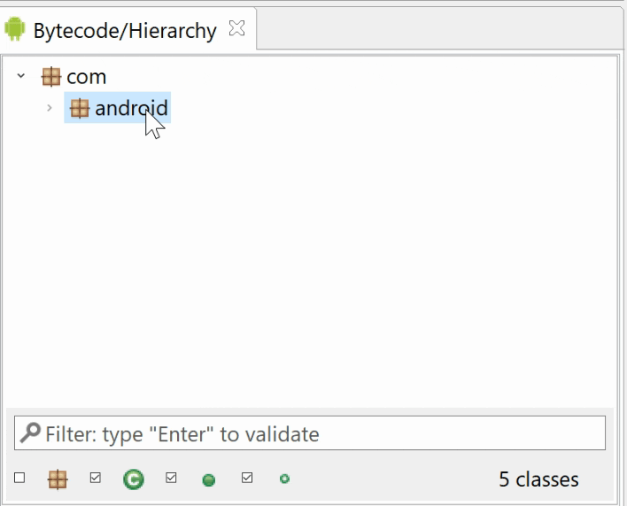

JEB supports packages and namespaces. Create packages, move code objects (methods, classes, etc.) to them by drag-and-dropping inside the Code Hierarchy panel, or use the Action menu, Create a Package / Move to a Package commands.
This command, like all actions located in the Actions menu, is available for native code as well as dex code.
